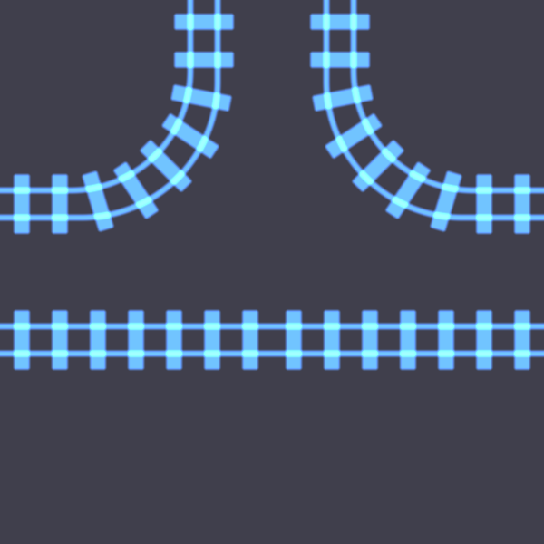
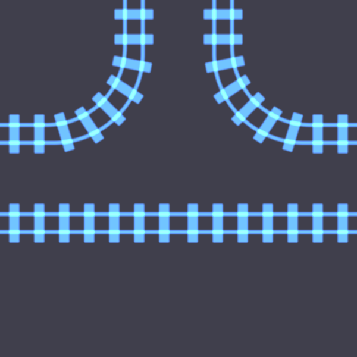

Wave Function Collapse - C++ & OpenGL Implementation
This project is a graphical implementation of the Wave Function Collapse (WFC) algorithm using C++ for logic and OpenGL (via GLFW and GLAD) for rendering. The rendering pipeline also utilizes stb_image for texture loading.
Technologies Used
- C++ - Core algorithm implementation.
- OpenGL - GPU rendering.
GLFW- Window and input management.GLAD- OpenGL function loader.stb_image- Texture loading from image files.
How It Works
The WFC algorithm works by choosing a tile for a given position based on neighboring constraints. After each selection, the wave function (possible tiles) for adjacent cells is collapsed, propagating constraints until the entire grid is filled or a contradiction is found. If a contradiction is found, it resets the board and tries to find a new valid configuration.
Below are the five tiles used in this project. Each tile includes sections of train tracks, and the algorithm enforces adjacency rules to ensure track continuity:
 

Applications
This technique is useful in a wide range of procedural generation contexts, such as:
- Game level/world generation (eg. Super Mario Bros WFC, Townscaper by Oskar Stålberg
- Texture synthesis
- Map creation for simulations and virtual environments
- Creative tools for artists and designers
Demo
Below are two demonstrations of the algorithm:
- Step-by-step visualization of how WFC collapses a grid cell by cell:
- Fast runthrough showcasing multiple generated grids in rapid succession:


Source Code
You can view the full source code here: